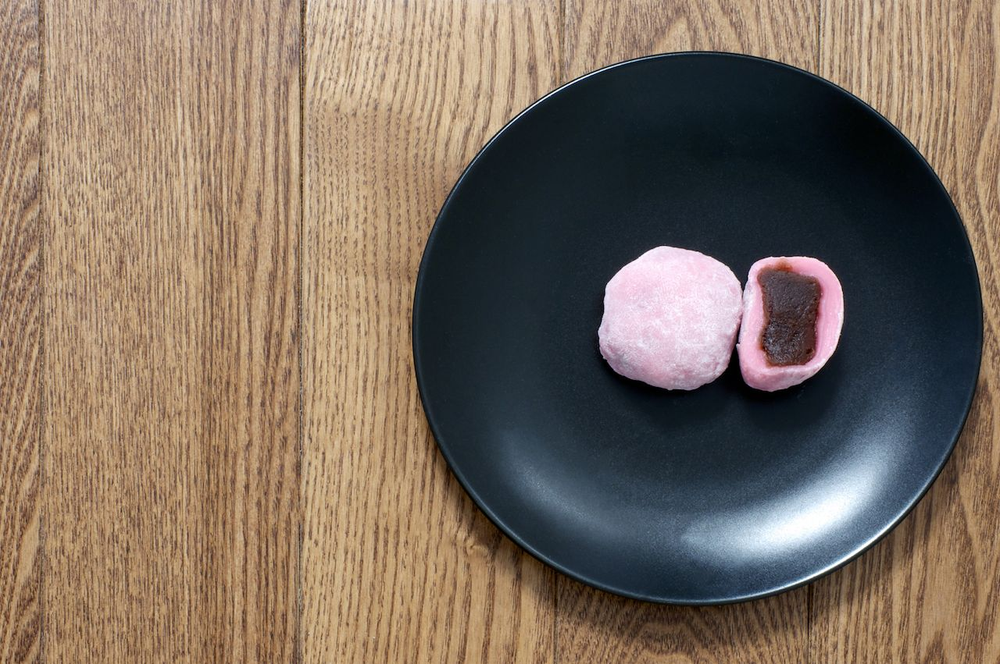

|
 | |
korean rice cakes is one of my favourite korean dishes as it provides both sweet and spicy taste and is chewy to eat |
korean fried chicken is one of my favourite korean dishes as it has a good crunch and comes with a saucy sauce that has both sweet and spicy flavours |
red bean mochi is one of my favourite korean dessert as the red bean taste is a sweet and slightly savoury taste which i enjoy |